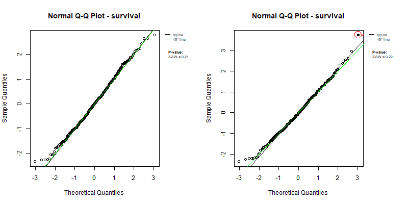
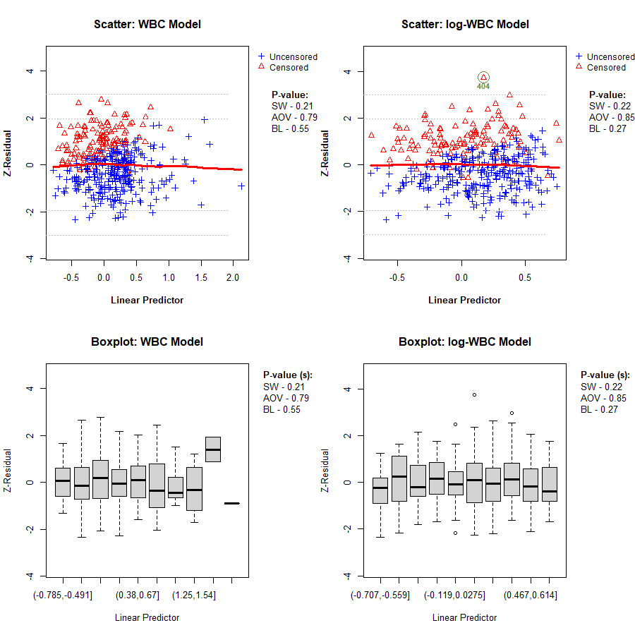
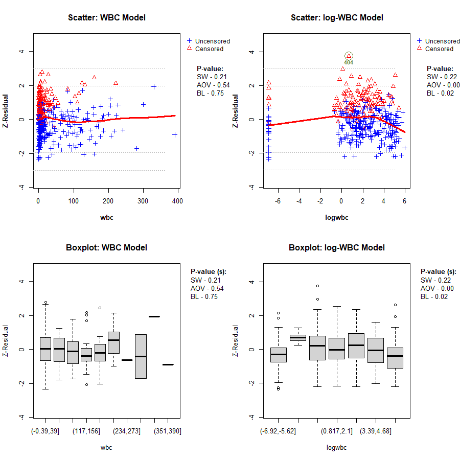
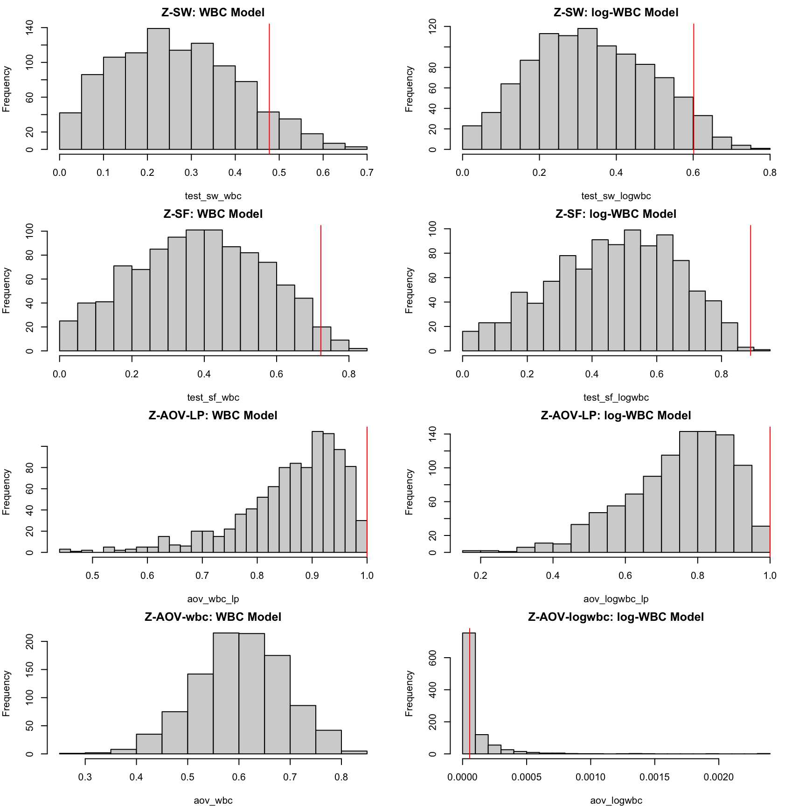
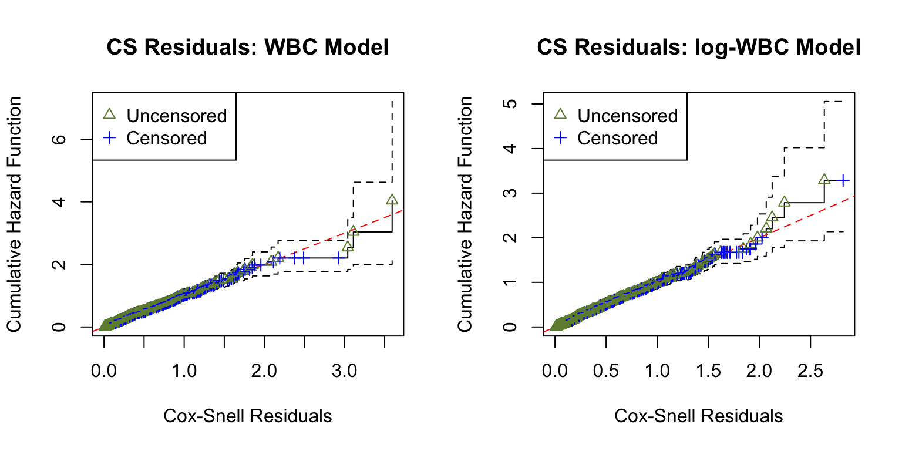
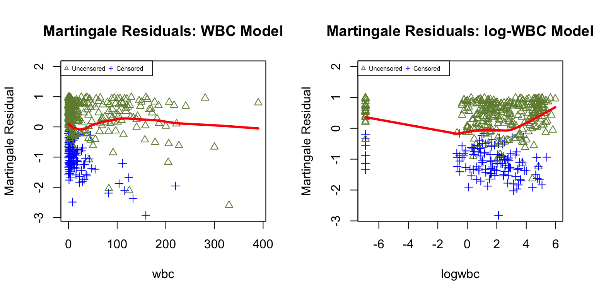
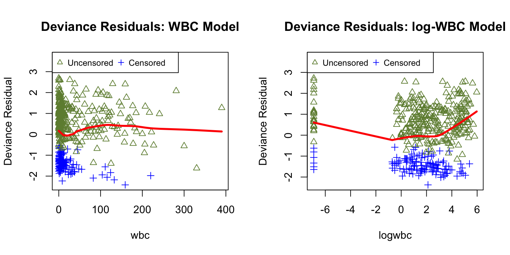

Code
if (!requireNamespace("Zresidual", quietly = TRUE)) {
if (!requireNamespace("remotes", quietly = TRUE)) install.packages("remotes")
remotes::install_github("user/Zresidual", upgrade = "never", dependencies = TRUE)
}Examples of Checking Functional Forms
Source:vignettes/articles/demo_coxph_frailty.qmd
Installing Zresidual and Required Packages
if (!requireNamespace("Zresidual", quietly = TRUE)) {
if (!requireNamespace("remotes", quietly = TRUE)) install.packages("remotes")
remotes::install_github("user/Zresidual", upgrade = "never", dependencies = TRUE)
}
pkgs <- c(
"survival", "EnvStats", "VGAM", "plotrix", "actuar", "stringr", "Rlab", "dplyr", "rlang", "tidyr",
"matrixStats", "timeDate", "katex", "gt")
missing_pkgs <- pkgs[!vapply(pkgs, requireNamespace, logical(1), quietly = TRUE)]
if (length(missing_pkgs)) {
message("Installing missing packages via renv: ", paste(missing_pkgs, collapse = ", "))
renv::install(missing_pkgs)
}
invisible(lapply(pkgs, function(p) {
suppressPackageStartupMessages(library(p, character.only = TRUE))
}))This vignette explains how to use the Zresidual package to calculate Z-residuals based on the output of the coxph function from the survival package in R. It also demonstrates how Z-residuals can be used to assess the overall goodness of fit (GOF) and identify specific model misspecifications in semi-parametric shared frailty models. It is a compannion to the paper by @Wu2025Zresidual
We use Z-residuals to diagnose shared frailty models in a Cox proportional hazards setting where the baseline function is unspecified. For a group i with n_i individuals, let y_{ij} be a possibly right-censored observation and \delta_{ij} be the indicator for being uncensored. The normalized randomized survival probabilities (RSPs) are defined as:
S_{ij}^{R}(y_{ij}, \delta_{ij}, U_{ij}) = \left\{ \begin{array}{rl} S_{ij}(y_{ij}), & \text{if } \delta_{ij}=1, \\ U_{ij}\,S_{ij}(y_{ij}), & \text{if } \delta_{ij}=0, \end{array} \right. \tag{1}
where U_{ij} \sim \text{Uniform}(0, 1) and S_{ij}(\cdot) is the postulated survival function. RSPs are transformed into Z-residuals via the normal quantile function:
r_{ij}^{Z}(y_{ij}, \delta_{ij}, U_{ij})=-\Phi^{-1} (S_{ij}^R(y_{ij}, \delta_{ij}, U_{ij})) \tag{2}
Under the true model, Z-residuals are normally distributed. This transformation allows researchers to leverage traditional normal-regression diagnostic tools for censored data. Furthermore, normal transformation highlights extreme RSPs that may indicate model misspecification but could otherwise be overlooked.
We utilize data from 411 acute myeloid leukemia patients recorded at the M. D. Anderson Cancer Center (1980–1996). The dataset focuses on patients under 60 from 24 districts. Key variables include survival time, age, sex, white blood cell count (WBC), and the Townsend deprivation score (TPI).
We compare two models: the wbc model (using raw WBC) and the lwbc model (using log-transformed WBC).
Once the model is fitted, we calculate Z-residuals for both models using 50 repetitions. We pass traindata = LeukSurv to allow the internal predictive functions to reconstruct the baseline hazard.
Under a correctly specified shared frailty model, Z-residuals should be approximately standard normal. The animation below shows the 50 randomization replicates for both candidate models.
gif_qq_path <- paste0(results_dir, "qqplot_anim.gif")
if (force_rerun || !file.exists(gif_qq_path)) {
gifski::save_gif(
expr = {
for (i in 1:10) {
par(mfrow = c(1, 2), mar = c(4, 4, 2, 2))
qqnorm(zresid_wbc, irep = i)
qqnorm(zresid_logwbc, irep = i)
}
},
gif_file = gif_qq_path, width = 800, height = 400, res = 72, delay = 0.8
)
}
knitr::include_graphics(gif_qq_path)
A key Z-residual diagnostic for model adequacy is homogeneity. After sorting observations by the linear predictor (LP), grouped Z-residuals should have similar mean and variance if the model is adequate.
gif_lp_path <- paste0(results_dir, "lp_anim.gif")
if (force_rerun || !file.exists(gif_lp_path)) {
gifski::save_gif(
expr = {
for (i in 1:10) {
par(mfrow = c(2, 2))
plot(zresid_wbc, info = zcov_wbc, x_axis_var="lp", main.title = "Scatter: WBC Model",
irep=i, add_lowess = TRUE)
plot(zresid_logwbc, info = zcov_logwbc, x_axis_var="lp", main.title = "Scatter: log-WBC Model",
irep=i, add_lowess = TRUE)
boxplot(zresid_wbc, info = zcov_wbc, x_axis_var = "lp", main.title = "Boxplot: WBC Model", irep=i)
boxplot(zresid_logwbc, info = zcov_logwbc, x_axis_var = "lp", main.title = "Boxplot: log-WBC Model", irep=i)
}
},
gif_file = gif_lp_path, width = 900, height = 900, res = 96, delay = 1
)
}
knitr::include_graphics(gif_lp_path)
To diagnose functional-form misspecification, we inspect Z-residuals against a specific covariate. If the functional form is adequate, the LOWESS curve should remain near 0.
gif_wbc_path <- paste0(results_dir, "wbc_anim.gif")
if (force_rerun || !file.exists(gif_wbc_path)) {
gifski::save_gif(
expr = {
for (i in 1:10) {
par(mfrow = c(2, 2), mar = c(4, 4, 1.5, 2))
plot(zresid_wbc, info = zcov_wbc, x_axis_var = "wbc", main.title = "Scatter: WBC Model",
irep=i, add_lowess = TRUE)
plot(zresid_logwbc, info = zcov_logwbc, x_axis_var = "logwbc", main.title = "Scatter: log-WBC Model",
irep=i, add_lowess = TRUE)
boxplot(zresid_wbc, info = zcov_wbc, x_axis_var = "wbc", main.title = "Boxplot: WBC Model", irep=i)
boxplot(zresid_logwbc, info = zcov_logwbc, x_axis_var = "logwbc", main.title = "Boxplot: log-WBC Model", irep=i)
}
},
gif_file = gif_wbc_path, width = 900, height = 900, res = 96, delay = 1
)
}
knitr::include_graphics(gif_wbc_path)
Table 1 summarizes the first 10 randomization repetitions for both candidate models.
| Summary of Residual Homogeneity Tests | |||||||
WBC Model
|
log-WBC Model
|
||||||
|---|---|---|---|---|---|---|---|
| Z-AOV-LP | Z-BL-LP | Z-AOV-wbc | Z-BL-wbc | Z-AOV-LP | Z-BL-LP | Z-AOV-logwbc | Z-BL-logwbc |
| 0.7880 | 0.5516 | 0.5429 | 0.7451 | 0.8522 | 0.2711 | 0.0002 | 0.0248 |
| 0.9561 | 0.8557 | 0.6568 | 0.9032 | 0.6201 | 0.8746 | 0.0000 | 0.4340 |
| 0.8359 | 0.7136 | 0.6365 | 0.8836 | 0.8503 | 0.2324 | 0.0000 | 0.4140 |
| 0.9290 | 0.9214 | 0.5503 | 0.6889 | 0.7553 | 0.5418 | 0.0005 | 0.5745 |
| 0.8598 | 0.7092 | 0.6764 | 0.9657 | 0.8010 | 0.3007 | 0.0000 | 0.9916 |
| 0.8560 | 0.8239 | 0.5887 | 0.9510 | 0.8359 | 0.3016 | 0.0000 | 0.9686 |
| 0.9432 | 0.7707 | 0.5868 | 0.9906 | 0.7257 | 0.1577 | 0.0002 | 0.5346 |
| 0.8108 | 0.8575 | 0.5602 | 0.8943 | 0.9176 | 0.6529 | 0.0000 | 0.9601 |
| 0.8847 | 0.6085 | 0.7281 | 0.8667 | 0.8269 | 0.7174 | 0.0000 | 0.9894 |
| 0.9813 | 0.6444 | 0.6899 | 0.8959 | 0.7260 | 0.3731 | 0.0001 | 0.5784 |
med_pval_sw_wbc <- upper_bound_pvalue(p_rep = test_sw_wbc)
med_pval_sw_logwbc <- upper_bound_pvalue(p_rep = test_sw_logwbc)
med_pval_sf_wbc <- upper_bound_pvalue(p_rep = test_sf_wbc)
med_pval_sf_logwbc <- upper_bound_pvalue(p_rep = test_sf_logwbc)
med_pval_aov_lp_wbc <- upper_bound_pvalue(p_rep = aov_wbc_lp)
med_pval_aov_lp_logwbc <- upper_bound_pvalue(p_rep = aov_logwbc_lp)
med_pval_aov_wbc <- upper_bound_pvalue(p_rep = aov_wbc)
med_pval_aov_logwbc <- upper_bound_pvalue(p_rep = aov_logwbc)
par(mfrow = c(4, 2), mar = c(4, 4, 2, 2))
hist(test_sw_wbc, main = "Z-SW: WBC Model", breaks = 20)
abline(v = med_pval_sw_wbc, col = "red")
hist(test_sw_logwbc, main = "Z-SW: log-WBC Model", breaks = 20)
abline(v = med_pval_sw_logwbc, col = "red")
hist(test_sf_wbc, main = "Z-SF: WBC Model", breaks = 20)
abline(v = med_pval_sf_wbc, col = "red")
hist(test_sf_logwbc, main = "Z-SF: log-WBC Model", breaks = 20)
abline(v = med_pval_sf_logwbc, col = "red")
hist(aov_wbc_lp, main = "Z-AOV-LP: WBC Model", breaks = 20)
abline(v = med_pval_aov_lp_wbc, col = "red")
hist(aov_logwbc_lp, main = "Z-AOV-LP: log-WBC Model", breaks = 20)
abline(v = med_pval_aov_lp_logwbc, col = "red")
hist(aov_wbc, main = "Z-AOV-wbc: WBC Model", breaks = 20)
abline(v = med_pval_aov_wbc, col = "red")
hist(aov_logwbc, main = "Z-AOV-logwbc: log-WBC Model", breaks = 20)
abline(v = med_pval_aov_logwbc, col = "red")
| Model | AIC | CZ-CSF | Z-SW | Z-SF | Z-AOV-LP | Z-AOV-log(wbc) |
|---|---|---|---|---|---|---|
| WBC model | 3,111.669 | 0.550 | 0.478 | 0.722 | 1.000 | 1.000 |
| log-WBC model | 3,132.105 | 0.339 | 0.602 | 0.890 | 1.000 | 0.000 |
| Model | CZ-CSF p-value |
|---|---|
| wbc model | 0.5496 |
| lwbc model | 0.3387 |
ucs_wbc <- surv_residuals(fit_wbc, LeukSurv, "Cox-Snell")
ucs_logwbc <- surv_residuals(fit_logwbc, LeukSurv, "Cox-Snell")
par(mfrow = c(1, 2))
plot.cs.residual(ucs_wbc, main.title = "CS Residuals: WBC Model")
plot.cs.residual(ucs_logwbc, main.title = "CS Residuals: log-WBC Model")
martg_wbc <- surv_residuals(fit_wbc, LeukSurv, "martingale")
martg_logwbc <- surv_residuals(fit_logwbc, LeukSurv, "martingale")
par(mfrow = c(1, 2))
plot.martg.resid(martg_wbc, x_axis_var="wbc", main.title = "Martingale Residuals: WBC Model")
plot.martg.resid(martg_logwbc, x_axis_var="logwbc", main.title = "Martingale Residuals: log-WBC Model")
dev_wbc <- surv_residuals(fit_wbc, LeukSurv, "deviance")
dev_logwbc <- surv_residuals(fit_logwbc, LeukSurv, "deviance")
par(mfrow = c(1, 2))
plot.dev.resid(dev_wbc, x_axis_var="wbc", main.title = "Deviance Residuals: WBC Model")
plot.dev.resid(dev_logwbc, x_axis_var="logwbc", main.title = "Deviance Residuals: log-WBC Model")